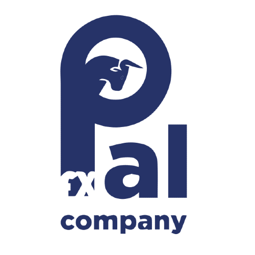
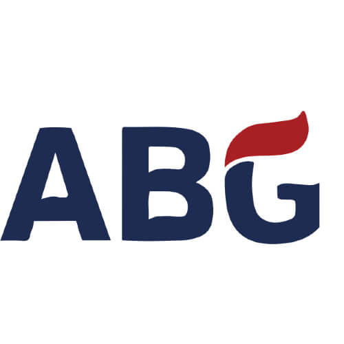
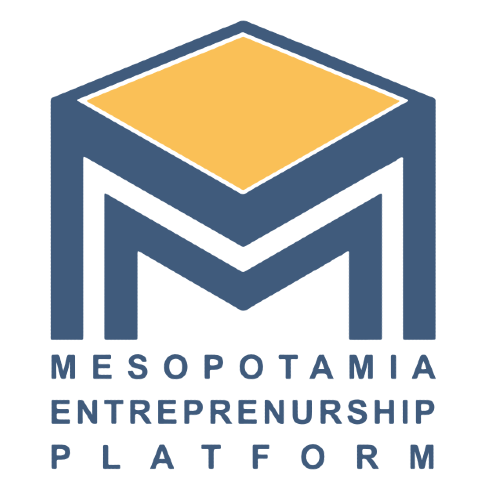
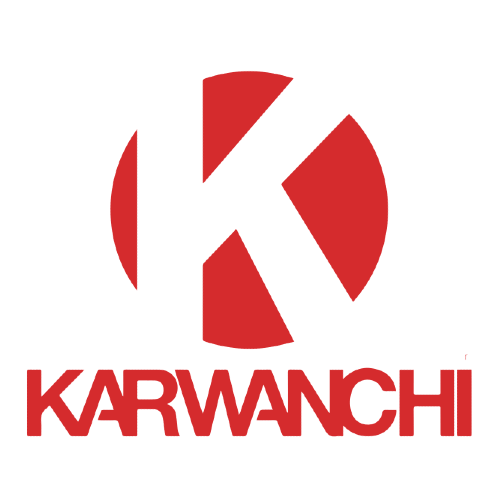

Partners





We are working on steps Toward Sustainable local Communities in Iraq. We navigate Solutions for Citizens and Their local Governments. Our vision is building engaged communities through active citizenship and volunteering.
Kirkuk is an industrial city and its climate gets wormer every year. This province has less than 2% green space. Therefore, Kokar foundation for sustainable development and voluntary works took upon the responsibility to plan and organize this campaign to collect and plant 10000 trees in Kirkuk province in one day. In the previous weeks, kokar volunteers planned, collected and supervised this environmental campaign. This aims to increase the green space as well as awareness about the importance of planting. as well as utilizing environment awareness for strengthening peace and coexistence. The trees planted today were collected.
Hawri Hashm Sayed born in 18th December 1986, living in Kirkuk-Iraq, a master’s degree in Applied mathematics and computer science in Cyprus.
Hawri Hashm Sayed born in 18th December 1986, living in Kirkuk-Iraq, a master’s degree in Applied mathematics and computer science in Cyprus.